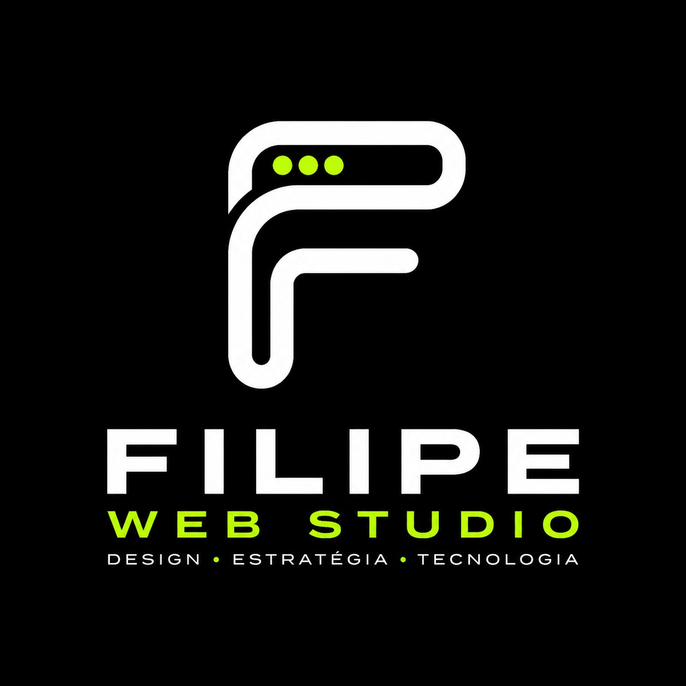
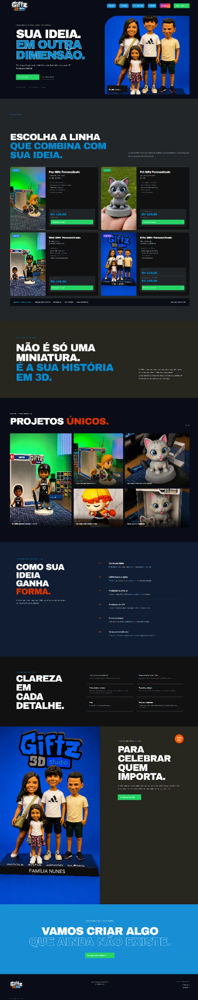
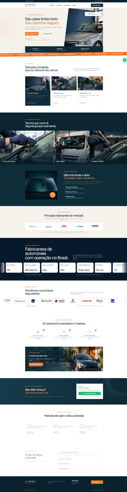
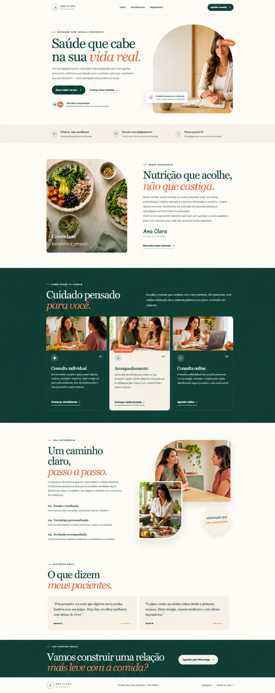
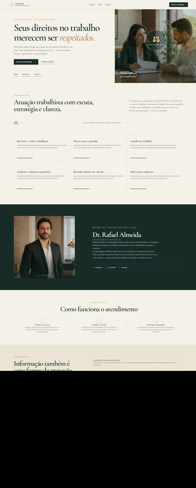
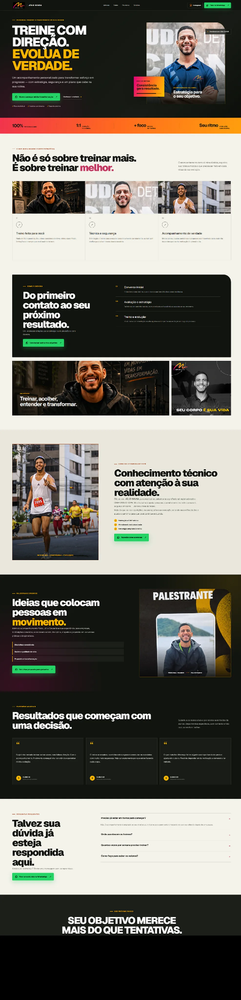

01
Landing pages
Páginas estratégicas para apresentar serviços, gerar confiança e transformar visitas em contatos.
- Estrutura personalizada
- Chamadas para ação
- Foco em conversão

Filipe Web Studio Quero meu siteCriação de landing pages e páginas institucionais personalizadas, responsivas e integradas ao WhatsApp para empresas e profissionais.
Do primeiro esboço à publicação, cada detalhe é pensado para apresentar sua marca com clareza e facilitar o contato com novos clientes.
Páginas estratégicas para apresentar serviços, gerar confiança e transformar visitas em contatos.
Sites completos para apresentar sua empresa, fortalecer sua autoridade e organizar serviços com clareza.
Atualização de páginas que precisam de mais clareza, velocidade e uma apresentação visual atual.
Recursos para facilitar o contato e conectar sua presença digital aos canais do negócio.
Direção visual essencial para manter cores, tipografia e elementos da marca consistentes na página.
Os formatos ajudam a orientar a conversa. O escopo e o investimento são personalizados depois do briefing.
Para apresentar um serviço ou campanha com uma ação principal clara.
Para empresas e profissionais que precisam organizar apresentação, serviços e contato.
Para projetos que combinam direção visual, conteúdo e integrações específicas.
Valores, prazo, revisões, pagamento e suporte são definidos na proposta conforme a necessidade real do projeto.
Uma seleção de landing pages e páginas institucionais desenvolvidas para empresas, profissionais e iniciativas de impacto.

Landing page criada para apresentar as linhas de colecionáveis, explicar o processo de produção e conduzir pedidos diretamente ao WhatsApp.

Experiência comercial completa para apresentar serviços, fabricantes, seguradoras e conduzir o cliente ao orçamento.

Página acolhedora e editorial, com apresentação da abordagem, atendimentos, processo e depoimentos de pacientes.

Presença institucional sóbria, organizada para comunicar áreas de atuação, autoridade profissional e atendimento com clareza.

Landing page de alta energia para personal trainer, com metodologia, trajetória, palestras, resultados e chamada direta ao WhatsApp.
Conheço seu negócio, seus objetivos, público e principais diferenciais.
Organizo as informações e planejo a jornada ideal para o visitante.
Crio a identidade visual da página e desenvolvo a experiência responsiva.
Faço os testes finais, publico a página e organizo a entrega conforme o escopo aprovado.
Sou Filipe Alves, criador de landing pages e projetos digitais. Tenho experiência com design gráfico, edição de imagens, audiovisual, modelagem 3D e ferramentas de inteligência artificial.
Meu objetivo é transformar ideias em soluções claras, modernas e funcionais, ajudando profissionais e empresas a apresentarem seus serviços com mais confiança no ambiente digital.
Recife-PE e atendimento onlineCada projeto recebe uma proposta personalizada, com escopo, etapas, revisões e condições definidos antes do início.
O investimento depende do conteúdo, das seções e das integrações necessárias. Depois de entender o projeto, envio uma proposta personalizada.
A necessidade de domínio, hospedagem e publicação é avaliada em cada projeto e descrita claramente na proposta.
Sim. As páginas são desenvolvidas para funcionar em celular, tablet e computador, com atenção à leitura e à navegação.
O prazo é definido após o briefing, de acordo com o tamanho do site, os materiais disponíveis e as etapas de aprovação.
Sim. WhatsApp, Instagram, Google Maps e formulários podem ser integrados conforme a necessidade do projeto.
As etapas de revisão e o que pode ser ajustado ficam registrados na proposta antes do início do trabalho.
Sim. Além de landing pages, desenvolvo páginas institucionais para apresentar empresas, serviços, diferenciais e canais de contato.
Não é necessário ter tudo pronto para iniciar a conversa. Avaliamos os materiais existentes e o que precisará ser preparado para a página.
As condições de pagamento são apresentadas junto com a proposta, antes do início do projeto.
Conte sua ideia e receba uma proposta personalizada para transformar sua presença digital.